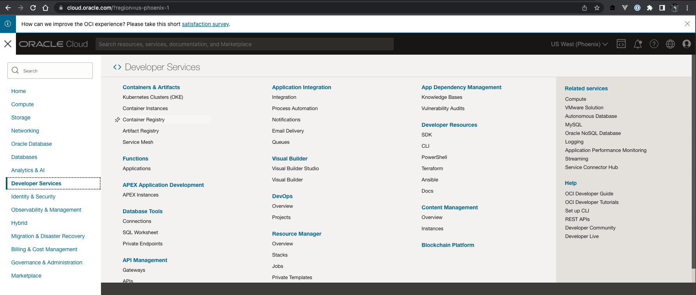
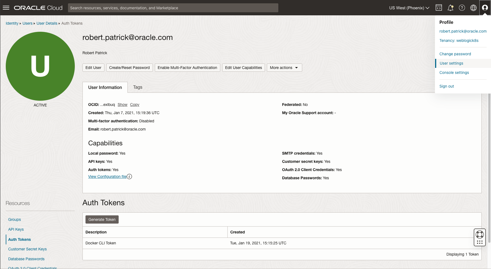
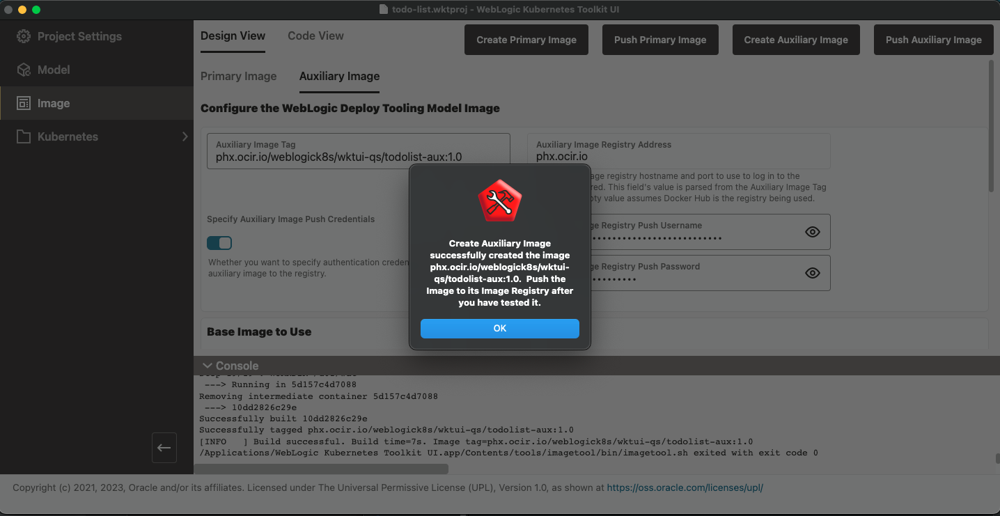

WKTUIでは、WebLogic Image Tool (WIT)を使用してコンテナ・イメージを構築します。 Oracle Fusion Middleware (「FMW)ドメイン・ターゲットのロケーション」オプションはそれぞれ独自のイメージ要件を持ちます。
Primary Imageタブを使用してこのようなイメージを構築します。 補助イメージのあるMIIとDomain-on-PVの両方に、構成のないソフトウェア(JavaおよびFMW)のみを含むイメージがあります。 これにより、操作上の重要ないくつかの利点が得られます:
DIIおよびMII (補助イメージなし)では、ドメイン・セット全体でセキュリティ修正をロールアウトするために、すべてのドメインに新しいイメージを構築する必要があります。 ドメイン数が多い場合、この負荷が大きくなり、環境のセキュリティが低下します。 これらの操作上の利点を利用するには、ToDoリスト・ドメインに補助イメージとともにMIIを使用します。
次のイメージに示すように、Imageページに移動します。
独自のプライマリ・イメージを構築するには、デフォルトでオフになっているCreate New Primary Imageを有効にします。 これを行うには、Java 11 JDKおよびWebLogic Server 14.1.1インストーラをダウンロードし、フォームに入力して、Create Primary Imageを実行する必要があります。 その後、イメージ・レジストリ内の任意の場所にイメージ・リポジトリを作成し、新しく作成したイメージをそこでプッシュする必要があります。 Oracleが次のパッチ・セットをリリースしたら、再度実行する必要があります。
幸いなことに、OCRでは事前作成済のイメージのみを使用できます。 OCRにログインし、「ミドルウェア」カテゴリを選択します。 Oracle Support資格証明を持たないユーザーの場合は、weblogicリポジトリの使用条件に同意していることを確認してください。 次のイメージでは、weblogicリポジトリ行の末尾にある緑色のチェックマークに注意してください。 Oracle Support資格証明を持つユーザーは、かわりにページの下部にあるweblogic_cpuリポジトリを使用することを強くお薦めします。
この練習では、新しい補助イメージを作成します。 これはデフォルト設定で、Auxiliary Imageタブがアクティブです。 次のイメージに示すように、Auxiliary Imageタブを選択します。
最初に決定する必要があるのは、補助イメージに使用するイメージ・レジストリです。 この演習では、Oracle Cloud (OCIR)のコンテナ・レジストリを使用しますが、別のイメージ・レジストリを自由に置換できます。 ここでは、イメージ・レジストリの選択が残りの例に影響する箇所を示します。
Oracle Cloudアカウントにログインした後、次のイメージに示すように、「開発者サービス」カテゴリの下の「コンテナ・レジストリ」オプションを選択します。
選択したレジストリで、wktui-qs/todolist-auxという新しいプライベート・リポジトリを作成します。 新しいリポジトリへのアクセスに必要なURLに注意してください。 OCIRリポジトリの場合、URLの形式は<region-abbreviation>.ocir.io/<tenancy-name>/wktui-qs/todolist-auxです。region-abbreviationはphx (フェニックス・リージョンの場合)のようなもので、tenancy nameはhttps://cloud.oracle.comへのログインに使用されるテナンシの名前です。 使用可能なすべてのリージョンのリストは、この「表」を参照してください。
このOCIRリポジトリにDockerおよびKubernetesからアクセスするには、パスワードのかわりにアカウントに関連付けられた認証トークンを使用する必要があります。 認証トークンを作成するには、ユーザー設定に移動し、リソースの下の「認証トークン」オプションを選択し、次のイメージに示すように「トークンの生成」をクリックします。 生成されたトークンのコピーは必ず保持してください。なぜならば、あなたがクリア・テキストでみることができるのはこの機会「のみ」だからです。
イメージ・レジストリの準備ができたので、WKTUIのAuxiliary Imageタブに入力します。 フォームに入力する前に、いくつかの注意事項があります。
<tenancy-name>/<username>の形式である必要があります。Use Custom Base Imageを有効にしてフォームに入力するだけで変更できます。Make Image Compatible with OpenShiftを有効にします。これらを念頭に置いて、次の表のデータを使用してフォームに入力します。 フィールドの値を指定しない場合は、環境に特に必要な場合を除き、デフォルトに設定したままにします。
| フィールド名 | 値 |
|---|---|
Auxiliary Image Tag |
<image-repository-url>:1.0 ;例: phx.ocir.io/mytenancy/wktui-qs/todolist:1.0 |
Specify Auxiliary Image Push Credentials |
ON |
Auxiliary Image Registry Push Username |
<tenancy>/<username> ;例: mytenancy/fred.jones@mycompany.com |
Auxiliary Image Registry Push Password |
<auth-token-value> ;例: z+M3C2UqRraHG73Z+.X8 |
Use Custom Base Image |
OFF |
Docker Hub Username |
Docker Hubアカウントのユーザー名 |
Docker Hub Password |
Docker Hubアカウントのパスワード |
Download and Use Latest WebLogic Deploy Tooling Installer |
ON |
Make Image Compatible with Open Shift |
OFF (環境に必要な場合を除く) |
フォームを完了すると、補助イメージを作成する準備が整います。 「補助イメージの作成」をクリックすると、指定した一連の引数を指定してアプリケーションがWITを起動し、補助イメージを構築できます。 WITのcreateAuxImageコマンドを実行する前に、次の2回プロンプトが表示されます:
Noを選択します。 次の図は、補助イメージが正常に作成された後のアプリケーションを示しています。
これで、補助イメージをイメージ・レジストリにプッシュする準備ができました。 macOSで実行する場合は、Docker (またはPodman)の実行可能ディレクトリ(たとえば、Rancher Desktopを使用している場合は$HOME/.rd/bin)がProject SettingsページのExtra Path Directories表に追加されていることを確認する必要があります。 これを行うと、Dockerは、資格証明を格納するためにmacOSキー・チェーンと対話するために使用する実行可能ファイルを検索できます。
「プッシュ補助イメージ」をクリックします。 この時点で、フォーカスをKubernetesクラスタにシフトする準備ができました。 モデル・ファイルを変更する場合は、新しい補助イメージを作成する必要があります。モデルのYAMLファイルにフィールドが追加された場合は、Prepare Modelを再実行する必要がある場合があります。 新しいイメージを作成してプッシュする前に、必ずAuxiliary Image Tagフィールドのバージョン番号を増やすことを強くお薦めします。 これにより、どのイメージが使用されているかがわかります。